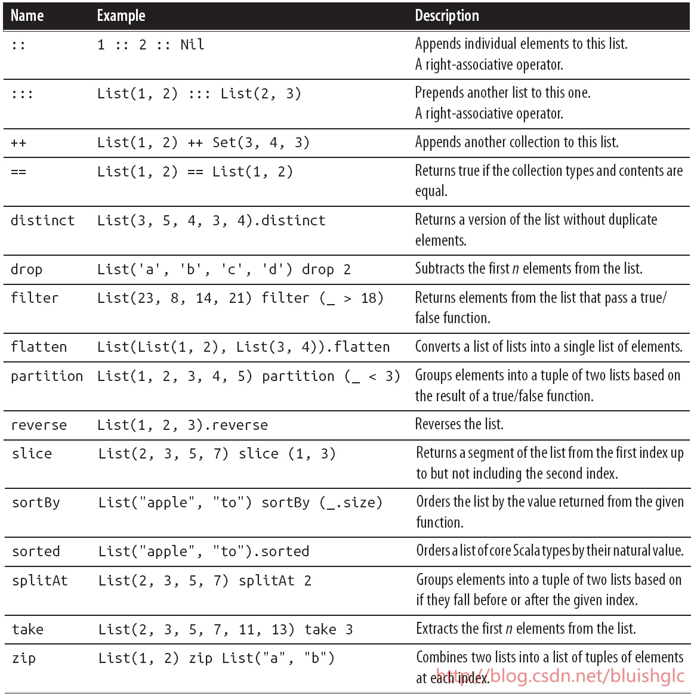
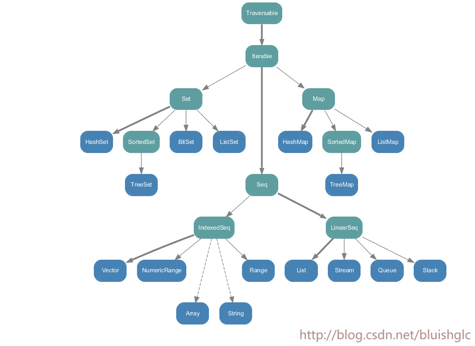
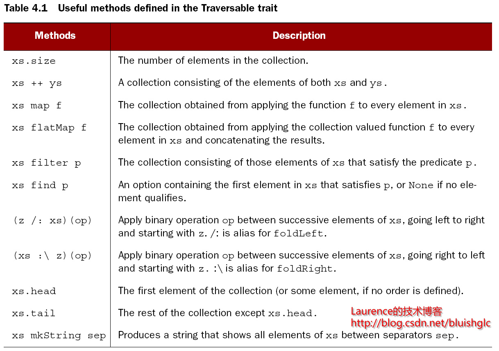

SCALA学习笔记（二）
SCALA学习笔记（二）
泛型在继承中的 类 型变化
scala中的 Type Variance指的是一个类型参数（泛型）在父类和子类之间的转换！比如方法重载时！
Invariant
默认情况下类型是Invariant的，即类型参数是不允许向上或向下转型！请看下面的例子：
1 | scala> case class Item[A](a: A) { def get: A = a } |
对于Item中的类型参数A,它是Invariant的，从Car到子类Volov的向下转型是不允许的！
Covariance
允许类型参数向上转型！请看下面的例子:
1 | scala> case class Item[+A](a: A) { def get: A = a } |
Item中的类型参数+A表示类型参数A是Covariant的，允许类型参数向上转型！所以 val c: Item[Car] = new Item[Volvo](new Volvo) 是合法的！
注意：Scala是不允许一个Covariance类型作为方法的输入参数的！
Contravariance
允许类型参数向下转型！请看下面的例子:
1 | scala> class Car; class Volvo extends Car; class VolvoWagon extends Volvo |
注意：同样的，Scala是不允许一个Contravariance类型作为方法的返回值的！
所以总结上面的例子，我们可以简单地说：
Covariance
在类的继承过程中，泛型从一个笼统的类型到一个具体类型的转变过程
Covariance allows subclasses to override and use narrower types than their superclass in covariant positions such as the return value.
类型参数协变（covariance)是对通过在类型参数上添加一个加号来标识的！
举例：
1 | sealed abstract class Maybe[+A] { |
上面的例子中，抽象基类Maybe的类型参数A前面添加的+，标识A是可协变的，则这意味着它的子类可以重写这个类型，或者说是更具体化这个类型。比如Nil,它就将Maybe的A具体化到了Nothing!这是允许的！
Contravariance
在类的继承过程中，泛型从一个具体的类型到一个笼统类型的转变过程
Scala uses the minus sign (-) to denote contravariance and the plus sign (+) for covariance.
a contravariant allows you to go from a narrower type to a more generic type.
Call-By—Name
当一个参数是“按名称调用”时，它的值是不会在传入时就进行计算的，而是推迟到方法体内第一次使用它时再进行计算，这里有一个很好事例：
1 | //一个简单的打印日志的函数 |
Currying（柯里化）初探
这是第一次设计Currying，先做初步的理解，后续会再深入地探究。Currying allows you to chain functions one after another with a single parameter.柯里化的目的或者说效果就是可以把所有的函数参数一个接着一个地串联起来变成一个单一的参数。 柯里化（Currying）是把接受多个参数的函数变换成接受一个单一参数(最初函数的第一个参数)的函数，并且返回接受余下的参数且返回结果的新函数的技术。 举个例子：
1 | def flatten[B](xss: List[List[B]]): List[B] = { |
注意函数flatMap的声明，它需要两个参数，但是这两个参数并不是使用逗号分割的，而是分别独立使用小括号包裹的，这就是进行了”柯里化”处理，这种处理表现到方法调用上就变成了 flatMap(List("one", "two", "three")) { _.toList } 这样的形式，这种方式的实质是:flatMap的第二个参数是以一个闭包{_.toList }传递的。
lambda和closure的区别
举个例子：
1 | scala> List(100, 200, 300) map { _ * 10/100 } |
在这个例子中，传递给map函数的函数字面量 _ * 10/100 就是一个landba!
而下面的例子中,
1 | scala> var percentage = 10 |
applyPercentage则是一个闭包！其根本特征在于：它会持续追踪创建以及使用它的那个外部环境（或者说上下文）（it keeps track of the environment in which it’s created）比如这个示例中的变量percentage！
集合二维运算
下面列表中提到的right-associative operator是指：操作符右侧必须是集合类型！

foldLeft & foldRight
1 | class List[+A] { |
让我们看下面这个例子！
1 | scala> def pl(a:String,b:Int):String={println(a+":"+b);a+b} |
所以上面的例子清晰地说明了两个方法的行为：
-
foldLeft从左向右迭代集合，二元操作函数的第一个参数是给定的初始值,第二个参数是集合的当前元素！二元函数的返回值将作为下次调用时的第一参数！再简单一些解释就是：把给定的初始元素放在最右边，然后从右向左，把元素
-
foldRight从右向左迭代集合，二元操作函数的第一个参数是集合的当前元素！第二个参数是给定的初始值！二无函数的返回值将作为下次调用时的第二参数！
Function Object
这并不是什么特殊的机制，Function Object实际上指的是像使用函数一样使用一个object!这我们来看一下例子：
1 | object foldl { |
上面的代码无非是把foldLeft封装到了一个object的apply方法里，这样一来，我们再想调用这个方法时，就可以这样写了：
1 | scala> foldl(List("1", "2", "3"), "0") { _ + _ } |
Partial Functions
Partial Functions: only accepts a partial amount of all possible input values.
Partially Applied Function:is a regular function that has been partially invoked, and remains to be fully invoked (if ever) in the future.
Function Object
Function Ojbect是一个object ,但是你又可以像使用一个函数那样去使用它。什么意思呢？这我们来看一个例子,我现在有这样一个函数：
1 | def hof(list:List[Int],f:(Int)=>Int):List[Int]={ |
通常这样的方法定义是存在于类的内部。有些时候，我们想定义一些全局静态方法的集合类，也就是像让一些方法变成全集可调用的一些utilities方法，这个时候我们就需要使用Funtion Object了！让我们来看一下如何把这个function改造成function object!
1 | object fo { |
我们可以看到这种处理的实质是要把一个函数包裹或着说改造成一个对象！就像是把函数变成了“全局静态”的，也就是意味着我们可以更方便的去调用一些非对象内的函数，也是过去被声明为public static的方法。
Function Trait
继续上面的话题，我们知道，在scala里，()是一个语法糖，它实际上形式是.apply().所以说，在使用Function Object的时候，apply这个方法名是固定的，也不能写错，实际上这种约束不是严格的，开发者会容易拼写等错误而让调用失败，所以这个时候，如果我们有一种类似“接口”的约束和规范机制，那会好的很多。 在scala里，Function trait就是做这个用的。 我们来看一个：
1 | trait Function1[-T1, +R] extends AnyRef { |
1标示只有一个参数的函数。它硬性定义了抽象方法apply，这意味着它的子类必须重写这个apply方法。
让我们来看一个例子：
1 | object ++ extends Function1[Int, Int]{ |
这个函数”++”如果直接写就是这个样子：
1 | val ++ = (x: Int) => x + 1 |
但是我们这里还有一种看上去更加奇怪的写法：
1 | object ++ extends (Int => Int) { |
我们为解释一下： 实际上，这里的 Int => Int 是 Function1[Int, Int] 的简化写法！
最后，让我们来使用一下这个++函数对象！
1 | scala> List(1,2,3).map(++) |
Scala集合类的Hierarchy

Collection包的类层次结构
Immutable包的类层次结构
Mutable包的类层次结构
可变与不可变集合元素
Traversable的主要方法

关于/:和:可以这样记忆：冒号所在在那一则是集合，另一侧就是计算的初始值。初始值在左侧就是foldLeft(计算都是从初始值开始的）；初始值在右侧就是foldRight
Mutable和Immutable之分
scala中的集合类一个比较大的差别是Mutable和Immutable的区别。通常对于同一个集合接口会提供两个版本的实现。比如 scala.collection.Map[A, +B] 就同时是 collection.mutable.Map[A, B] 和 collection.immutable.Map[A, +B] 两个实现类的父类。
null，nil和Option
null or nil (in the case of Ruby) in code. In Ruby, things are a little better
in the sense that Nil is a singleton object, and you can invoke methods on Nil. But
in Java if a variable reference is null, you get a NullPointerException. To avoid the
issue many programmers clutter their codebase with null checks and make the code
difficult to read.
null是java里的，表示一个空值。nil来自于ruby,它是一个单态对象，这意味着你可以在nil上调用方法。null一个不太好地方是当一个对象被赋予null里，如果引用这个对象调用它的方法时会常常地抛空指针错误，所以代码里会出现大量的判空语。
scala使用的是Option！Option是一个抽象类，它有两个子类，是Some和None
var a: A = _的含义
var a: A = _ (是var不是val，如果是val会编译报错). 这种写法的意思是使用默认值去初始化变量。对于不同的类型，它们的默认值如下：】
1 | 0 if T is Int or one of its subrange types, |
那么对于一些类类型来说，这样写的效果是就是 var a: A = null
copy方法
copy方法会基于当前实例的所有字段值复制一个新的实例并返回， 你也可以在通过给copy方法传递参数来重新设定某一个或几个字段的值，这是通过命名参数实现（named parameters）实现的。举个例子：
1 | scala> println(op) |
BinOp是一个case class, op是一个实例，第3行我们调用它的copy方法，同时指定了operator 字段的值是一个减号，那么copy出来的实例它的operator字段的值就是减号，所有其他的字段都和原实例是一样的。